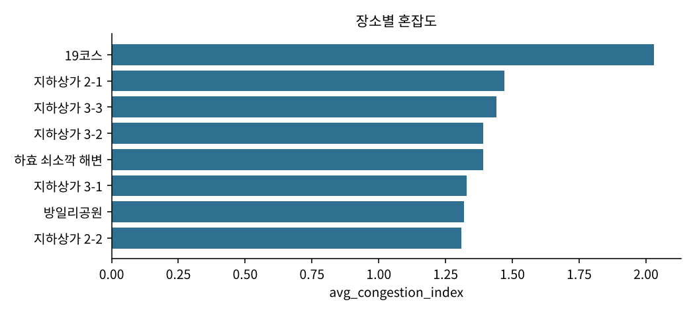
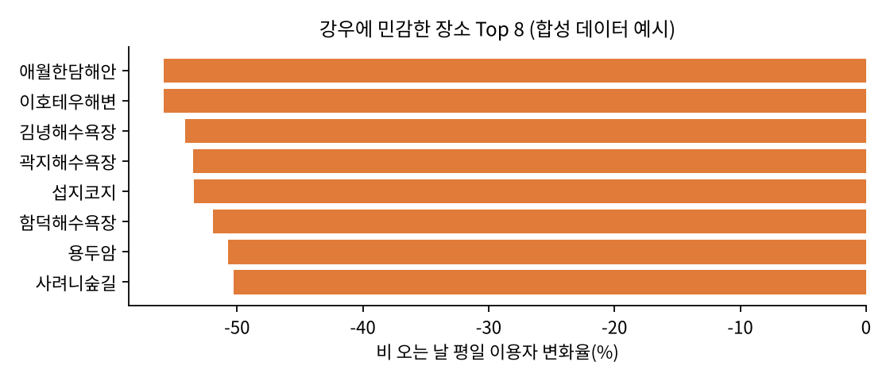
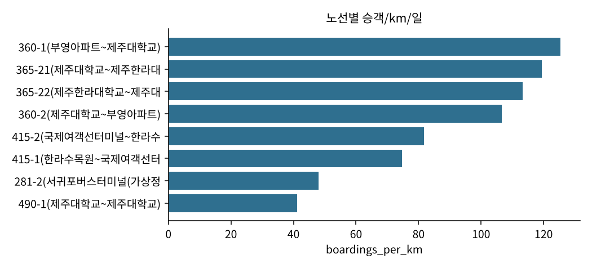

제주 AI·빅데이터 활용 AI Agent 개발 챌린지 — AI Agent 기획서
제주 혼잡·이동 진단 Agent
공공 와이파이와 버스 승하차 데이터로 읽는 관광지 쏠림과 대중교통 수요
팀명: 재주도좋다 | 팀장: yangg
제출일: 2026년 11월 | 버전: v0.4
활용 데이터: 제주빅데이터센터 데이터 명세서 v12 기준 9종 (와이파이 3, 교통 4, 환경 2 — 모두 반출 가능)
0. 요약
문제 — 2026년 제주는 내국인 관광객 감소·외국인 급증, 특정 관광지 쏠림, 버스 준공영제 효율 논란이 동시에 진행 중이다. 그러나 "어디에 누가 몰리는가", "어느 노선·시간대가 비어 있는가"를 도민·공무원이 직접 숫자로 확인하려면 전문가의 SQL·시각화 작업이 필요하다.
해법 — 질문 한 줄을 입력하면 AI Agent가 ① 적절한 분석 도구를 고르고 ② 와이파이·버스·날씨 데이터를 집계해 ③ 지도·차트와 함께 쉬운 말로 결론·근거·한계를 돌려준다.
핵심 발상 — 유동인구·카드 데이터는 센터 밖 반출이 불가능하지만, 공공 와이파이 AP별 이용 현황(4-05)에는 국적·방문유형(관광/거주/업무)·AP 좌표가 있어 반출 가능 데이터만으로 "관광객·외국인이 몰리는 장소"를 읽는 혼잡 센서로 쓸 수 있다. 여기에 티머니 버스 승하차(3-02/3-04)를 결합해 혼잡 관광지의 대중교통 수요와 비효율 노선·시간대까지 한 흐름으로 진단한다.
현재 상태 — 분석 도구 14개(예측·월간 브리핑·기간 비교·자율 탐색 포함), 질문 없이 Agent가 먼저 훑어 보여 주는 첫 화면(혼잡 상위 5곳 지도 + 오늘의 발견), 골든 회귀셋과 원클릭 재현(scripts/reproduce.py), LLM 도구호출 플래너 + 규칙 기반 오프라인 모드, 센터 반출 정책 기준 게이트, LLM 전송 내용 미리보기와 답변 숫자 검증, Agent 실행 계획 노출, 코드가 작성하는 자동 점검(한계), 결과 기반 후속 질문 제안, LLM 자기 점검(답변-근거 대조), 대화 맥락 해석, 로컬 LLM(Ollama) 오프라인 경로, Streamlit UI, CLI, 테스트 84개가 구현되어 있으며, 제주데이터허브 공개 API로 수집한 2025년 9월 실데이터 6종(4-05·4-01·3-04·3-02·3-03·3-01)과 Open-Meteo 날씨(5-02·5-01)로 전 기능이 검증되었다(센터 원본 적재 시 국적·시간대 기능 추가 활성화).
| 분석 도구 | 지원 LLM | 데이터셋 | 질문→답변 | 외부망 없이 |
|---|
| 14개 | Claude / GPT / Ollama / 없음 | 9종(반출 가능) | 0.1~1초(집계) + LLM 5~15초 | 동작(규칙 모드) |
1. 구현 목표
1.1 분석 주제
"제주 관광지 혼잡과 대중교통 수요를 반출 가능 데이터만으로 진단하는 AI Agent"
- 관광지 혼잡: 공공 와이파이 AP 접속 고유 이용자를 장소·일 단위로 집계해 혼잡지수(평소 평일 대비 배수), 관광객·외국인 비중, 주말/강우 민감도를 산출한다.
- 대중교통 수요: 티머니 승하차로 정류소·노선·시간대별 승차 수요, 교통약자(경로·장애·어린이) 비중, 승객/km/일 효율과 저이용 시간대를 산출한다.
- 결합: 혼잡 관광지 반경 1.5km 정류소의 수요·피크 시간을 묶어 "몰리는 곳으로 가는 버스는 충분한가"를 답한다.
1.2 AI를 활용한 데이터 분석 목표
| 목표 | 측정 방법 |
|---|
| 비전문가가 질문만으로 결과를 얻는다 | 예시 질문 12종을 UI 버튼 클릭만으로 실행, 결론·근거·해석·한계 4단 답변 |
| 모든 수치가 추적 가능하다 | 도구 호출 인자·계산 방법·SQL·반출 게이트 로그를 답변과 함께 저장(JSON/HTML) |
| 센터 PC와 외부 어디서든 재현된다 | python scripts/reproduce.py 한 번에 18문항 실행 → 골든 지문(도구·행 수·핵심 숫자) 대조 + pytest, DuckDB 없으면 sqlite 폴백, LLM 없으면 규칙 모드 |
| 개인정보가 밖으로 나가지 않는다 | LLM은 집계표(최대 40행)만 수신, 식별자 컬럼 차단, 센터 반출 정책 기준 10 미만 셀 마스킹, 전송 내용 미리보기 |
1.3 왜 지금 제주에 필요한가
- 2026년 9월 내국인 관광객 약 88.5만 명(전년比 −8.1%), 카드 소비 −12.7%, 외국인 25.8만 명(+18.1%) — 도는 8월부터 "관광지표 대응 민생경제 상황실"을 가동 중이다(경향신문 2026.10.21 보도 기준).
- 버스 준공영제는 막대한 재정 지원에도 비효율 노선 논란이 이어져 노선·시간대별 수요 근거가 필요하다.
- 외국인 관광객 증가와 함께 특정 관광지 쏠림·쓰레기·기초질서 민원이 늘어, "어디에 누가 언제 몰리는가"를 상시 모니터링할 도구가 요구된다.
2. 서비스 제안
2.1 데이터 활용 개요
와이파이 AP별 이용(4-05)
고유 이용자·국적·방문유형·좌표
+
버스 정류소·노선별 이용(3-04/3-02)
시간대·이용자구분·승차
+
일일 날씨(5-02)
강수량·기온
→
혼잡지수 · 접근성 · 노선 효율 · 강우 민감도
2.2 핵심 기능 (구현 완료)
| 기능 | 사용자 질문 예 | Agent가 하는 일 |
|---|
| ① 혼잡 순위 | "주말에 가장 붐비는 관광지는?", "외국인이 많이 가는 곳은?" | 장소별 혼잡지수·관광/외국인 비중 순위 → 지도에 원 크기로 표시 → 1위 장소 주변 정류소까지 자동 연계 |
| ② 장소 프로필 | "성산일출봉은 언제 붐비나?" | 일별 추이, 요일·월별 평균, 가장 붐빈 날, 국적·방문유형 구성, 추세 증감률 |
| ③ 관광지 접근 | "성산일출봉 가는 정류소는 얼마나 붐비나?" | 반경 1.5km 정류소 승차·피크 시간 vs 와이파이 이용자 비교 |
| ④ 노선 효율 | "효율이 낮은 노선은?", "251번 시간대별 이용" | 승객/km/일·승객/정류소, 피크의 15% 미만 저이용 시간대 자동 탐지 |
| ⑤ 교통약자 정류소 | "어르신이 많이 타는 정류소는?" | 경로·장애·어린이 비중 순위, 시간대 프로필(경로 오전 집중 등) |
| ⑥ 강우 영향 | "비 오면 어디가 한산해지나?" | 가장 가까운 관측소 강수량으로 강우일/비강우일 이용 변화율 순위(평일·주말 분리) |
| ⑦ 주말 혼잡 예측 | "이번 주말 어디가 붐빌까?", "연휴에 분산 안내할 곳" | 최근 4회 같은 요일 중앙값 × 추세계수(최근 4주÷이전 4주)로 예상 이용자·혼잡지수와 구간 제시 → 분산 안내 후보 |
| ⑧ 월간 브리핑 | "5월 월간 브리핑", "지난달 어땠어" | 고유 이용자·외국인 비중·관광 비중의 전월 대비, 상위 장소, 저이용 노선, 강우일을 한 장으로 → 관광지표 대응 상황실용 |
| ⑨ 자유 집계 | "월정리 월별 이용자 수" | LLM이 집계 SQL 작성 → 읽기 전용·집계만 허용 → 게이트 통과 후 표시 |
⑩ 자율 탐색
(오늘의 발견) | (질문 없음 — 첫 화면) / "눈에 띄는 게 있어?", "노선 중에 특이한 점은?" | 장소·정류소·노선의 일별 값을 평일/주말 중앙값과 비교해 급증(1.8배↑)·급감(0.55배↓)·최근 7일 추세(1.4배↑/0.7배↓)를 스스로 찾고, 제공처 공백일·소표본을 제외한 뒤 유형이 겹치지 않게 3건을 근거·지도와 함께 제시 → 카드를 누르면 세부 분석으로 연결 |

[그림 1] 기능 ① 실데이터 출력 — 2025년 9월 주말 관광지 혼잡지수 순위(허브 공개 API, 정류소·충전소 AP 제외, 관측 20일·일평균 20명 이상). 1.0은 평소 평일 수준. 올레 19코스가 주말에 평일의 2배.
2.3 편의성
- 질문을 못 떠올려도 된다: 첫 화면에서 Agent가 먼저 데이터를 훑어 이용자가 많은 장소 5곳 지도와 오늘의 발견 3건(평소보다 갑자기 붐빈·한산해진 장소·정류소·노선)을 보여 주고, 장소 이름이나 발견 카드를 누르면 세부 분석이 바로 실행된다. 시작 질문 6개 버튼과 사이드바 예시 질문, 자연어 채팅도 가능.
- Agent의 생각이 보인다: 답변 위 🧭 실행 계획 패널에 "무엇을 어떤 순서로 왜 봤는지"(LLM 모드는 모델이 쓴 계획 문장, 오프라인은 규칙 선택 근거)와 도구 호출 내역이 보인다. 답변 아래에는 결과의 1위 장소·정류소를 넣은 이어서 물어보기 3개가 버튼으로 제안되어, 다음에 무엇을 물을지 몰라도 탐색이 이어진다. "거기 가는 버스는?"처럼 지시어로 물어도 직전 대화를 보고 해석한다.
- 보는 방식 6가지: 🗺️지도(pydeck) · 📊차트(plotly) · 📋근거 표 · 🔍방법·한계 · 🧾실행 로그 · 📡LLM 전송 내용 탭. 전문 용어는 처음 나올 때 풀어 쓴다.
- 가져가기: HTML 리포트(PNG 차트 내장·표·방법·게이트 로그), 차트 PNG(반출 정책상 그림파일), CLI JSON·월간 브리핑 저장.
- 데이터 넣기: CSV/XLSX를 UI에 드래그하거나
data/raw/에 복사. 한글·영문 헤더와 변형 헤더(정류장명·승차인원수 등)·cp949/UTF-8·구분자·날짜 포맷 자동 인식, scripts/check_data.py로 인식·매핑·기간을 한 번에 점검.
- 안전장치: LLM 장애·외부망 차단 시 자동으로 규칙 기반 모드, 합성 데이터 사용 시 모든 화면에 경고, 퇴실 전 "올린 자료 모두 삭제" 버튼, 출처 표기 문구 상시 표시.
2.4 분석 데이터 활용 방안 (센터·도정)
| 이용자 | 활용 시나리오 |
|---|
| 관광 부서 | 주말·연휴 혼잡 예상 관광지를 사전에 확인해 분산 안내·주차/셔틀 대응. 외국인 비중 높은 장소에 다국어 안내 우선 배치. |
| 교통 부서 | 저이용 시간대가 많은 노선, 관광지 접근 정류소의 피크 시간을 근거로 배차 조정·증편 검토 자료 생성. |
| 복지·읍면 | 경로 이용 비중이 높은 정류소의 오전 피크를 근거로 저상버스·정류소 편의시설 우선순위 결정. |
| 도민·소상공인 | "우리 동네 해변은 비 오면 얼마나 줄어드나" 같은 질문으로 영업·행사 계획 참고. |
| 빅데이터센터 | 방문 상담 시 상담원이 현장에서 즉시 집계·리포트 생성. 비반출 데이터(카드·유동인구)를 같은 게이트 구조로 추가해 확장 가능. |
3. Agent 개발 구성
3.1 참여자 역할·목표·Workflow
사용자
질문 한 줄
→
플래너
LLM 도구호출
(폴백: 규칙 기반)
→
분석 도구 12개
pandas / SQL 집계
원본 행 접근 없음
→
반출 게이트
식별자 제거 · <10 마스킹 · 행 상한
→
해설
LLM 또는 템플릿
결론·근거·해석·한계
→
UI / 리포트
지도·차트·표·로그
| 구성 요소 | 역할과 목표 |
|---|
| 사용자 | 질문만 한다. 장소·노선·기간을 정확히 몰라도 된다(부분 일치, 기본 기간 자동). |
| 플래너(LLM) | 시스템 프롬프트에 데이터 스키마·도구 설명·답변 형식이 들어 있다. 질문에 맞는 도구를 고르고 최대 6회까지 순차 호출(예: 혼잡 순위 → 1위 프로필 → 주변 정류소). 도구 오류 시 인자를 고쳐 1회 재시도. |
| 규칙 플래너 | LLM이 없거나 실패하면 키워드·장소명·노선번호·월 표현을 해석해 같은 도구를 호출하고 템플릿으로 답을 조립한다. |
| 분석 도구 | 각 도구는 JSON Schema로 인자를 정의하고, 집계표·사실(facts)·주의(caveats)·차트 스펙·지도 좌표·계산 방법을 함께 반환한다. |
| 반출 게이트 | config/export_rules.yaml 기준(센터 반출 정책 2026.09.01: 단순집계 10 미만 불포함, 시각화 PNG)으로 LLM·화면·리포트로 나가는 모든 표를 검사한다. |
| 해설 | LLM은 게이트 통과 집계표와 facts만 보고 4단 구조로 작성한다. 수치 창작 금지, 합성 데이터 경고 강제. |
| 숫자 검증 | 해설 속 숫자가 근거표·facts에 없으면 메모를 남기고, 20% 넘게 어긋나면 템플릿 해설로 대체한다(환각 방지의 구조적 보장). |
| 전송 미리보기 | 외부 LLM으로 나간 시스템 프롬프트·질문·집계표·응답 전부를 화면에서 그대로 볼 수 있다. 오프라인 모드는 전송 0건. |
| 실행 계획 | 플래너가 도구를 부르기 전에 쓴 계획 문장과 호출 내역(도구·인자·소요·행 수)을 답변 위 패널과 리포트에 남긴다. 규칙 플래너도 선택 근거를 문장으로 남긴다. |
| 자동 점검 | insight.py가 데이터 출처(실데이터/합성/기본값 채움), 요청 기간과 적재 범위의 차이, 소집단 마스킹, 표본 일수, 숫자 검증 결과를 모아 모든 답변의 한계에 붙인다. LLM이 한계를 빠뜨려도 결과물에는 항상 남는다. |
| 후속 질문 | 방금 쓴 도구와 결과(1위 장소·정류소·노선)에 맞춰 다음 질문 3개를 생성해 버튼으로 제안한다. LLM 모드에서는 LLM이 결과를 보고 직접 제안(규칙 제안은 예비). 최근 3턴을 맥락으로 함께 보내 지시어("거기")를 해석한다. |
| LLM 자기 점검 | 답변을 쓴 뒤 LLM이 자기 답변을 근거 사실·주의 문구와 대조해 과장·인과 표현·오해 소지를 지적하면 자동 점검에 "LLM 자기 점검"으로 붙인다(선택, 호출 1회 추가). 파싱 실패·장애 시 규칙 점검만 적용. |
3.2 사용 모델
| 모드 | 모델 | 용도·비고 |
|---|
| 클라우드(기본) | Anthropic Claude Sonnet 5.5 | 도구호출·한국어 해설 품질 우선. 질문당 2~5회 호출, 집계표 텍스트만 전송 |
| 클라우드(대안) | OpenAI GPT-4o-mini | OpenAI 호환 API. 키만 바꾸면 동작 |
| 로컬 | Ollama + qwen2.5:7b (4bit) | 센터 PC GTX 1060 6GB에서 실행 가능. 외부망 없는 환경용 |
| 오프라인 | 없음(규칙 기반) | 키·모델 없이 핵심 질문 패턴 처리. 자동 폴백 |
LLM 호출은 SDK 없이 requests로 직접 구현해 의존성을 최소화했고, Anthropic/OpenAI/Ollama 세 공급자의 도구호출 형식을 하나의 인터페이스로 추상화했다.
3.3 Tool / API 목록
| 도구 | 입력 | 출력 |
|---|
| congestion_rank | 기간, 주말만, 외국인만, 정렬기준, top_n | 장소별 혼잡지수·이용자·관광/외국인 비중 + 지도 좌표 |
| place_profile | 장소명, 기간 | 일별 추이, 요일·월별 평균, 구성비, 추세 |
| list_places | 카테고리 | AP 설치 장소 목록 |
| place_access | 장소명, 반경, 기간 | 반경 내 정류소 거리·승차·피크 시간 |
| bus_station_rank | 기간, 정렬(승차/교통약자/경로/주말비), 시내·시외 | 정류소 순위 + 좌표 |
| bus_route_efficiency | 기간, 노선(선택), 정렬 | 노선 효율 순위 또는 특정 노선 시간대 프로필·저이용 시간대 |
| hourly_profile | 정류소명, 기간, 이용자구분 | 평일/주말 시간대별 승차 |
| weather_effect | 대상(와이파이/정류소/노선), 장소, 기간, 강우 기준 | 강우일/비강우일 변화율 순위 |
| congestion_forecast | 대상 날짜, 장소(선택), top_n | 예상 이용자·구간·추세계수·예상 혼잡지수 |
| monthly_brief | 월(YYYY-MM) | 이용자·외국인·관광 비중 전월 대비, 상위 장소, 저이용 노선, 강우일 |
| compare_periods | 대상(장소/정류소/노선), 나누는 방식(전반·후반/평일·주말/두 기간), 기간, 장소(선택) | 대상별 두 구간 일평균·증감·변화율, 증가·감소 상위 |
| explore_anomalies | 대상(전체/장소/정류소/노선), 기간, top_n, 최소 일평균 | 급증·급감·최근 추세 발견 목록(대상·날짜·관측값·평소·배율·설명) + 지도 + 세부 분석 질문 |
| run_sql | 집계 SQL | 읽기 전용·GROUP BY 필수·식별자 금지·500행 상한 |
| describe_data | 데이터셋 키 | 컬럼 명세·적재 상태·출처(실/합성) |
외부 API: LLM API(선택)만 사용. 데이터는 전부 로컬 CSV → DuckDB(또는 sqlite) 적재.
3.4 판단 및 자율 수행 범위
| Agent가 스스로 결정하는 것 | Agent가 하지 않는 것 |
|---|
- 어떤 도구를 어떤 순서로 몇 번 쓸지(상한 6회)
- "성산"→"성산일출봉", "251"→노선명 같은 이름 해석
- 기간 미지정 시 전체 기간 사용과 그 사실 고지
- 도구 오류 시 인자 수정 재시도, LLM 장애 시 오프라인 폴백
- 답변 후 자기 점검으로 지적할 한계와 다음에 제안할 질문(LLM 모드)
- 질문이 없을 때 무엇을 먼저 보여 줄지 — 일별 값을 평소(평일/주말 중앙값)와 비교해 급증·급감·추세 변화를 찾고 수집 공백 의심치는 뒤로 미룸(자율 탐색)
- 해석·제안 문장 작성(도구 facts 범위 내)
|
- 원본 행 열람, 식별자 컬럼 출력, 쓰기·DDL SQL
- 도구 결과에 없는 수치·장소·노선 생성(프롬프트 금지 + 로그 대조 가능)
- 외부 데이터 자동 수집·외부 전송(집계표 외)
- 정책 결정 — 결과는 "검토 근거"로만 제시
|
4. 데이터 활용 계획
4.1 필수 데이터명·출처·활용 항목
| 코드 | 데이터명 | 제공처 | 반출 | 활용 컬럼 → 용도 |
|---|
| 4-05 | 와이파이 AP별 이용 현황 | 제주특별자치도 | 가능 | base_date, user_id(고유 수 집계만), ap_place, ap_category, ap_latitude/longitude, nationality, visit_type → 혼잡지수·구성비·지도 (필수) |
| 4-01 | 와이파이 AP 현황(고정형) | 제주특별자치도 | 가능 | ap_group_name, category, 좌표 → AP 위치 보조 |
| 4-06 | 와이파이 일별 이용자 현황 | 제주특별자치도 | 가능 | user_count, nationality, visit_type → 전체 추세 |
| 3-04 | 버스 정류소별 이용 현황 | 제주특별자치도(티머니) | 가능 | base_hour, bus_station_id/name, get_on_off_type, user_category, user_count → 정류소 수요·교통약자·시간대 (필수) |
| 3-02 | 버스 노선별 이용 현황 | 제주특별자치도(티머니) | 가능 | bus_route_id/name, base_hour, user_category, user_count → 노선 효율·저이용 시간대 |
| 3-01 | 버스 노선 정보 | 제주특별자치도(티머니) | 가능 | bus_route_length, bus_station_count → 승객/km, 승객/정류소 |
| 3-03 | 버스 정류소 정보 | 제주특별자치도(티머니) | 가능 | bus_city_type, 좌표 → 관광지 반경 검색, 지도 |
| 5-02 | 일일 날씨 정보 | 제주특별자치도 | 가능 | observatory_code, daily_rainfall → 강우일 판정 |
| 5-01 | 날씨 관측소 정보 | 제주특별자치도(농업기술원) | 가능 | 좌표 → 가장 가까운 관측소 선택 |
4.2 수집·전처리 방법
- 수집: ① 센터 분석실 '데이터검색'에서 원본 CSV 반출(허브 직접 확인 결과 이 메뉴는 분석실 전용) ② 집에서는 같은 제공처의 허브 공개 API 6종(와이파이 AP그룹별 일일 사용량, 일일 정류소별·노선별 버스 이용자 정보, 정류소·노선 기본 정보, 공공와이파이 AP 정보)을
scripts/fetch_hub.py로 기간 단위 수집 → data/raw/ CSV. 파일명은 데이터명·코드·영문키 어느 것으로 시작해도 자동 배정. 두 형식(원본/집계본)을 로더가 자동 구분하며, 집계본에 없는 국적·방문유형·시간대 기능은 비활성 표시 후 원본 적재 시 활성화.
- 인코딩·헤더: utf-8-sig → cp949 → euc-kr 순 자동 판별, 쉼표·탭·세미콜론 구분자와 XLSX 지원. 명세서의 컬럼명(영문)·컬럼명(한글)을 영문 표준명으로 매핑(공백·괄호 무시)하고, 비는 컬럼은
config/column_aliases.yaml의 별칭(정류장명·승차인원수·기준일자 등)으로 보완, 그래도 없는 컬럼은 데이터셋별 기본값(예: 승차만 있는 자료의 get_on_off_type=승차)으로 채우되 그 사실을 적재 상태와 답변 한계에 기록한다. 날짜는 2025-03-01·2025/3/1·20250301 어느 표기든 통일.
- 점검:
python scripts/check_data.py --strict가 필수 2종의 실데이터 여부·비어 있는 필수 컬럼·매핑되지 않은 헤더를 보고한다(docs/DATA_ACQUISITION.md).
- 타입: 명세서 INT/BIGINT/DOUBLE과, STRING으로 표기됐지만 숫자인 위경도·user_count를 숫자로 캐스팅. 오류 값은 NaN.
- 파생: date, ym, weekday, dow(월~일), is_weekend, hour. 노선·정류소 정보는 ID 기준 최신 1행.
- 지표 정의: 혼잡지수 = 장소·일 고유 user_id ÷ 평일 중앙값 / 교통약자 비중 = (경로+어린이+장애+유공)÷전체 승차 / 노선 효율 = 일평균 승차 ÷ km, 저이용 = 피크의 15% 미만 / 강우 효과 = 강우일(≥1mm) 평균 ÷ 비강우일 평균 − 1.

[그림 2] 기능 ⑤ 실데이터 출력 — 교통약자 비중 상위 정류소(2025-09-01~18). 장애인복지회관 96%, 오일시장·휴양림·초등학교 정류소가 상위. 허브 집계본은 요금제를 일반/청소년/어린이/기타로만 제공해 '기타'(경로·장애·유공 감면)를 교통약자로 간주.
4.3 이용조건·개인정보
- 9종 모두 명세서상 "데이터 반출 가능"인 공개 데이터이며, 출처를 README·리포트·답변에 표기한다. 비반출 데이터는 사용하지 않는다.
- user_id·mac_address는 이미 암호화된 값이지만, 서비스는 고유 수 집계에만 쓰고 결과·LLM·리포트 어디에도 노출하지 않는다(게이트가 강제).
- 센터 반출 정책(2026.09.01 개정)의 단순집계 기준에 맞춰 10 미만 집계 셀은 "<10"으로 마스킹하고, 시각화는 PNG 그림파일로 반출한다. 운영진 답변(2026-10-30)대로 원본·원본 조회 결과는 외부 LLM에 보내지 않는다.
- 출처 표기: "본 자료는 제주빅데이터센터에서 제공하는 자료를 활용한 것이며, 연구결과는 제주특별자치도 및 제주테크노파크와 관련이 없음을 밝힙니다."를 화면·리포트·답변에 상시 표시한다.
- 외부 데이터 없음. 개발용 합성 데이터는 명세서 구조만 참고해 자체 생성했으며 실제 값과 무관함을 모든 출력에 표시한다.
5. 개발·탑재 계획
5.1 구현 범위
| 구분 | 내용 | 상태 |
|---|
| 데이터 | CSV 자동 인식·표준화·적재(DuckDB/sqlite), 합성 데이터 생성기 | 완료 |
| 도구 | 분석 도구 14개(예측·브리핑·기간 비교·자율 탐색 포함), JSON Schema, facts/caveats/차트/지도 반환 | 완료 |
| Agent | LLM 도구호출 루프(3개 공급자), 규칙 플래너, 폴백, 실행 로그 | 완료 — 시나리오 LLM 전 경로 테스트 + Claude 실키 16문항 검증(폴백 0, 형식 15/16, 자기 점검·후속 질문 동작) |
| 안전 | 반출 게이트(10 미만·PNG), 읽기 전용 SQL, 식별자 차단, LLM 전송 미리보기, 숫자 검증 | 완료 |
| UI | 첫 화면(혼잡 상위 5 지도·오늘의 발견·시작 질문) + Streamlit 채팅 + 실행 계획 패널 + 이어서 물어보기 + 6탭 + CSV 업로드·삭제 + HTML/PNG 리포트 + 대화 맥락 | 완료 |
| 재현 | 원클릭 재현 scripts/reproduce.py(골든 지문 18문항 대조), CLI 단일/배치/브리핑, pytest 84개(API 키 불필요), README·데이터 명세·매뉴얼·데이터 확보 가이드·시연 대본, requirements-lock | 완료 |
| 실데이터 | 허브 CSV 적재 후 임계값(15%, 1mm, 1.5km) 보정 | 제출 전 수행 |

[그림 3] 기능 ④ 실데이터 출력 — 노선 효율(승객/km/일) 상위. 시내 간선 360·365번이 110~125명/km/일, 최저는 성산항~서귀포 295번 0.27. 일평균 승차 20명 미만·노선거리 미확인 노선은 제외. 시간대별 저이용 구간은 센터 원본 3-02 적재 시 표시.
5.2 기술 환경
| 항목 | 내용 |
|---|
| 언어·런타임 | Python 3.10+ (개발·검증 3.13) |
| 설치 패키지(사전 명시) | pandas, numpy, PyYAML, python-dotenv, requests, matplotlib, duckdb, streamlit, plotly, pydeck, pytest — 11개와 그 의존성(고정 버전 requirements-lock.txt). 선택: Ollama(로컬 LLM, qwen2.5:7b). 그 외 설치 없음. |
| 데이터 | pandas, numpy, DuckDB(선택; 없으면 sqlite3 내장) |
| UI·시각화 | Streamlit, Plotly, pydeck(화면), matplotlib(PNG 반출) |
| LLM 연동 | requests (Anthropic Messages API / OpenAI Chat Completions / Ollama 네이티브 /api/chat — num_ctx 12k 지정, 압축 프롬프트) |
| 설정·테스트 | PyYAML, python-dotenv, pytest |
| 저장소 구조 | jeju_agent/(data, tools, agent, gate, llm, planner_rules, report, cli) · config/(schemas.yaml, export_rules.yaml) · app.py · docs/ · tests/ · examples/ |
5.3 UI 구성
| 영역 | 구성 |
|---|
| 사이드바 | 오프라인 모드 토글, 엔진·LLM 상태, 적재 데이터 표(실/합성·행수·기간), CSV 업로드·다시 읽기·올린 자료 삭제, 예시 질문 10개 버튼, 대화 지우기 |
| 첫 화면 | 질문 전: 이용자 상위 5곳 지도(장소 버튼 → 세부 분석), 오늘의 발견 3건 카드(급증·급감·최근 추세, "자세히 보기 →"), 시작 질문 6개, 근거·방법·한계 펼침 |
| 본문 | 채팅 형식. 답변(결론·근거·해석·한계·출처) → 검증 메모 → 모드/도구/LLM 호출/소요 메트릭 → 탭: 지도(원 크기=지표), 차트, 근거 표, 방법·한계(계산 방법·인자·게이트 로그), 실행 로그(숫자 검증 결과), LLM 전송 내용 → HTML 리포트·PNG 다운로드 → 하단 출처 표기 |
실제 화면(Claude 실키 경로): 왼쪽 — 질문 → 실행 계획(도구·인자·소요) → 4단 답변, 오른쪽 — 지도 탭. 전체 7장은 docs/screens/
5.4 센터 실행환경과 외부 서비스 의존성
| 센터 운영 PC 최소사양 | 본 서비스 요구 |
|---|
| Intel Core i7-8700 / GTX 1060 6GB / RAM 32GB |
- 적재·분석: CPU·메모리만 사용. 합성 80만 행 기준 적재 15초, 질문당 집계 0.1~1초. 실데이터 수백만 행도 DuckDB로 수 초 내.
- LLM: (a) 외부망 가능 → Anthropic/OpenAI API, (b) 외부망 불가 → Ollama qwen2.5:7b 4bit(GTX 1060 6GB 적합;
scripts/ollama_check.py가 서버·모델·도구 호출·Agent 질문을 순서대로 점검), (c) 둘 다 없음 → 규칙 모드.
- 설치:
install.bat(처음 한 번: 가상환경·위 11개 패키지·합성데이터·테스트) → run.bat. 운영진 답변(2026-10-30)대로 기획서에 명시한 패키지만 설치하며, 센터 데이터 시스템 API 접속 없이 이용자가 CSV를 반입하는 방식이다.
|
| 외부 의존성 | 필수 여부 / 대체 |
|---|
| LLM API (Anthropic / OpenAI) | 선택. Ollama 로컬 또는 규칙 모드로 대체. 전송 내용은 게이트 통과 집계표(≤40행)뿐 |
| 지도 타일(pydeck 기본) | 선택. 없으면 Streamlit 기본 지도로 폴백, 표·차트는 영향 없음 |
| PyPI | 최초 설치 1회. 오프라인 설치용 wheel 묶음 제공 가능 |
6. 검증·한계·재현성
6.1 검증 방법
- 단위·통합 테스트 84개: 적재, 한글·변형 헤더 표준화·기본값·XLSX·구분자·날짜 포맷, 정보성 테이블 중복 제거, 도구 14종 실행, 게이트 10 미만 마스킹·식별자 제거, 이름 정규화 매핑, 기상청 CSV 변환·합성 혼입 차단·실기간 강우 효과, 기간 비교 도구, LLM 자기 점검·후속 질문과 실패 대체, Ollama 요청 형식, 숫자 검증과 환각 답변 대체, 예측값 구간 검사, PNG 생성, SQL 원본행·식별자 차단, 오프라인 Agent 응답·출처 표기, 자율 탐색(주입한 급증·급감 검출·열린 질문 라우팅·첫 화면·숫자 검증 폴백), 골든 회귀 18문항(동봉 축약본 기준 도구 순서·행 수·첫 행 숫자·첫 사실 지문 일치), 그리고 시나리오 LLM으로 도구 호출 루프·오류 재시도·호출 한도·장애 폴백·대화 맥락·Anthropic 메시지 변환.
- LLM 모드 실키 검증:
scripts/llm_smoke.py가 예시 질문을 LLM·오프라인 양쪽으로 돌려 문항별 도구 선택·숫자 검증·4단 형식 준수·자기 점검·토큰을 docs/LLM_EVAL.md에 표로 남긴다. 11/7 Claude 실키로 16문항 실행: 전부 LLM 경로 완료, 형식 15/16, 숫자 검증 181개(재검증 미확인 0), 평균 16.6초.
- 합성 데이터 패턴 회수: 개발 단계에서 합성 데이터에 성산일출봉 주말 급증, 251번 낮 시간 공차, 읍면사무소 경로 비중, 해변 강우 민감을 심어 두고 Agent가 찾아내는지 확인(모두 회수).
- 실데이터 감사(2026-11-05): 허브 공개 API 9월 실데이터를 넣자 합성 데이터에서는 보이지 않던 문제 7가지가 드러나 모두 수정했다 — ① 관측 4일짜리 장소가 혼잡지수 31배로 1위(→ 관측일·이용자 하한, 기준선 최소 10명) ② 1,465개 장소 중 2/3가 정류소·충전소 AP(→ 관광지 질문에서 자동 제외, 장소명 기반 카테고리 추론) ③ 와이파이 좌표 결측(→ 4-01 장소명·3-03 정류소ID/정류소명으로 보완, 이름 정규화 후 93%) ④ 3-04와 3-03의 정류소 ID 체계 불일치(→ 정류소명 매핑, 공백·괄호·방향 꼬리표를 무시하는 정규화로 86%→99%, 이름이 빈 행은 원본ID로 복원) ⑤ '경로' 요금제 부재(→ '기타'를 교통약자로 간주, 한계 명시) ⑥ 시간대 컬럼 부재(→ 일 단위 도구로 자동 대체, 계획 패널에 사유 표시) ⑦ 제공처 날짜 공백(9/21·23)(→ 자동 점검에 표시). 결과: 교통약자 1위 장애인복지회관(96%), 주말 승차 급증 1위 렛츠런파크(3.6배)·관음사탐방로입구(2.3배), 성산일출봉 반경 1.5km 정류소 14개 일평균 518명 등 현장과 부합하는 답을 낸다.
- 원클릭 재현:
python scripts/reproduce.py --pytest 한 번으로 데이터 점검 → 18문항(16 + 열린 질문 + 첫 화면) 오프라인 실행 → tests/golden/demo_golden.json의 지문과 대조(불일치 문항·숫자를 표로 출력) → outputs/samples/(결과 JSON·HTML 리포트·REPRODUCE.md) → 테스트 84개. API 키·인터넷 없이 약 1분. 운영진의 코드 실행 요청(규칙 5조)에 같은 명령으로 답한다.
- 규정 근거 등급: 반출 정책·운영진 답변·이용약관의 적용 내용을
docs/DATA_SPEC.md §7에 [확인]/[확인 필요] 꼬리표로 적어 두었다.
6.2 한계 (답변의 '한계' 항목에 자동 표시)
- 와이파이 이용자는 방문객의 표본이며 AP 수·위치에 따라 편향된다 → 절대 방문객 수가 아닌 상대 지표.
- 4-05에는 시각 컬럼이 없어 와이파이 기준 시간대별 혼잡은 불가(시간대는 버스 데이터로 보완).
- 버스 효율은 배차 횟수 없이 승차 수요 기준. 현금 승차 제외.
- 강우 효과는 공휴일·행사 미통제 단순 비교(상관).
- 규칙 모드는 정해진 질문 패턴만 처리. 복합 질문은 LLM 모드 권장.
- 주말 혼잡 예측은 공휴일·행사·날씨 예보를 반영하지 않는 요일 패턴 기반 추정이며 구간과 함께 제시한다.
- 허브에서 직접 확인(2026-11-05): 9종 모두 "반출 가능"이나 원본 CSV '데이터검색'은 분석실 전용. 집에서는 허브 공개 API(제공처 제주빅데이터센터)로 2025년 최신 집계본을 수집해 개발·검증하고, 센터 방문 시 원본으로 교체한다.
현재 제출본은 제주데이터허브 공개 API 실데이터(2025-09)로 검증되었다: 4-05 와이파이(30일·1,465개 장소), 3-04 정류소별(9/1~18), 3-02 노선별(28일), 4-01·3-03·3-01. 집계본이라 국적·방문유형·시간대 컬럼이 없어 외국인 비중·시간대 프로필은 비활성이며 센터 원본 적재 시 자동 활성화된다. 날씨(5-01·5-02)는 허브에 없어 scripts/fetch_weather.py(기상청 기상자료개방포털 CSV 변환 / Open-Meteo / 기상청 API허브)로 받으며, 2025-09 Open-Meteo 4개 지점 자료를 동봉해 강우 문항(강우일 기준 자동 선택: 9월은 3mm)도 실데이터로 동작한다. 기간이 다른 합성 날씨는 실데이터에 섞지 않는다.
7. 일정 및 기대효과
| 기간 | 작업 |
|---|
| ~11/8 | 허브 공개 API 수집(fetch_hub.py) → check_data.py 점검 → 매핑·임계값 보정(완료: 정규화 매핑, 날씨 수집기, 기간 비교, LLM 자기 점검, Ollama 경로), llm_smoke.py로 LLM 모드 실키 검증; 가능하면 분석실 예약으로 원본 교체 |
| ~11/14 | 시연 영상, 결과 설명자료 확정, 오프라인 wheel 묶음 |
| ~11/19 | 최종 ZIP·PDF 제출, 상호평가 준비 |
기대효과 — ① 반출 가능 데이터만으로 관광 쏠림·교통 수요를 상시 진단하는 저비용 도구 확보 ② 상담원·공무원·도민이 SQL 없이 근거 있는 수치를 즉시 확보 ③ 동일한 게이트 구조에 카드·유동인구 데이터를 더하면 센터 내부용 고해상도 버전으로 확장 가능.
데이터 출처: 제주특별자치도·제주빅데이터센터·제주데이터허브(티머니, 농업기술원 등). 개발 과정에서 생성형 AI(Claude)를 코드·문서 초안 작성에 활용했으며 사람이 검토·수정했다.